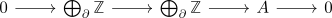

existence of a moore space
Proposition
Let $A$ be abelian group and $n \geq 1$. Then there exists a moore space $M(A,n)$
Proof
existence
Let
\begin{align*}
f: \bigvee_{i \in I} S^n \rightarrow \bigvee_{\partial} S^n
\end{align*}
be a map corresponding to a presentation in Category Ab (cf. presentation of a group)

Then $\mathrm{Cone}(f)$ satisfies the required homology:
\begin{align*}
H_k(M_n(A)) =
\begin{cases}
\mathbb{Z} & \mbox{if } k = 0 \\
0 & \mbox{if } 0 < k < n \\
A & \mbox{if } k = n \\
0 & \mbox{if } k > n \\
\end{cases}
\end{align*}
computation
observe that $\mathrm{Cone}(f)$ is connected. Then follows from the long exact sequence of homology for a mapping cone and the reduced singular homology and wedge product & singular homology of a sphere, i.e. there exists a
(todo: write )